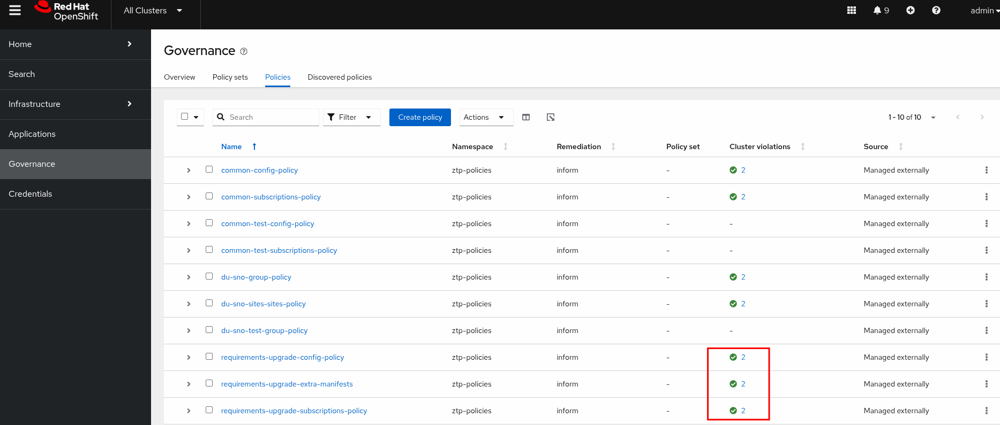
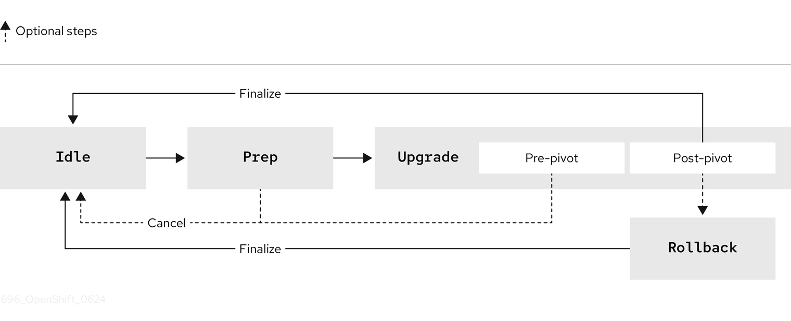
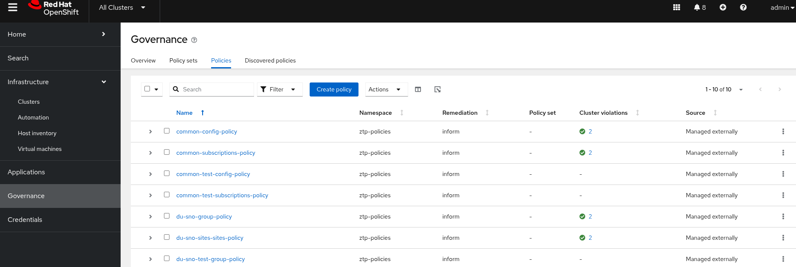

Image-based upgrade for Single-node OpenShift Clusters
Introduction to Image-based Upgrades
In this section, we will perform an image-based upgrade to both managed clusters (sno-abi and sno-ibi) by leveraging the Lifecycle Agent (LCA) and the Topology Aware Lifecycle Manager (TALM) operators. The LCA provides an alternative way to upgrade the platform version of a single-node OpenShift cluster, while TALM manages the rollout of configurations throughout the lifecycle of the cluster fleet.
The image-based upgrade is faster than the standard upgrade method and allows direct upgrades from OpenShift Container Platform <4.y> to <4.y+2>, and <4.y.z> to <4.y.z+n>. These upgrades utilize a generated OCI image from a dedicated seed cluster. We have already provided a seed image with version 4.18.0-rc.8. The process to generate this seed image is the same as the one we executed in Creating the Seed Image for version 4.18.0-rc.7 to install sno-ibi.
| Image-based upgrades rely on custom images specific to the hardware platform on which the clusters are running. Each distinct hardware platform requires its own seed image. You can find more information here. |
Below are the steps to upgrade both managed clusters and their configuration from 4.18.0-rc.7 to 4.18.0-rc.8:
-
Create a seed image using the Lifecycle Agent. As mentioned, the seed image
infra.5g-deployment.lab:8443/ibi/lab5gran:4.18.0-rc.8is already available in the container registry. -
Verify that all software components meet the required versions. You can find the minimum software requirements here.
-
Install the Lifecycle Agent operator and the OpenShift API for Data Protection (OADP) in the managed clusters.
-
Configure OADP to back up and restore the configuration of the managed clusters that isn’t included in the seed image.
-
Perform the upgrade using the
ImageBasedGroupUpgradeCR, which combines the ImageBasedUpgrade (LCA) and ClusterGroupUpgrade APIs (TALM).
Both clusters were installed using different methodologies. While sno-abi was provisioned using the agent-based install workflow, sno-ibi was deployed using the image-based install. However, as long as they both meet the Seed cluster guidelines and have the same combination of hardware, Day 2 Operators, and cluster configuration as the 4.18.0-rc.8 seed cluster, we’re ready to proceed.
|
First, let’s verify the software requirements in our hub cluster:
Verifying Hub Software Requirements
Let’s connect to the hub cluster and list all the installed operators:
oc --kubeconfig ~/hub-kubeconfig get operatorsNAME AGE
advanced-cluster-management.open-cluster-management 28h
lvms-operator.openshift-storage 28h
multicluster-engine.multicluster-engine 28h
openshift-gitops-operator.openshift-operators 28h
topology-aware-lifecycle-manager.openshift-operators 28hVerify that the Image-Based Install (IBI) operator is installed:
oc get pods -n multicluster-engine -lapp=image-based-install-operatorNAME READY STATUS RESTARTS AGE
image-based-install-operator-7f7659f86c-cd46k 2/2 Running 0 46hNext, double-check that the TALM operator is running. Note that the name of the Pod is cluster-group-upgrade-controller-manager, which is based on the name of the upstream project Cluster Group Upgrade Operator.
oc --kubeconfig ~/hub-kubeconfig get pods -n openshift-operatorsNAME READY STATUS RESTARTS AGE
pod/cluster-group-upgrades-controller-manager-v2-789fd8fbcd-nn4k5 2/2 Running 0 103m
pod/openshift-gitops-operator-controller-manager-6794f4f9cc-vpm2b 2/2 Running 0 106mVerifying Managed Clusters Requirements
In the previous sections, we deployed the sno-abi cluster using the agent-based installation and the sno-ibi cluster using the image-based installation. Before starting the upgrade, we need to check if the Lifecycle Agent and OpenShift API for Data Protection operators are installed in the target clusters.
| We already know that both SNO clusters meet the seed cluster guidelines and have the same combination of hardware, Day 2 Operators, and cluster configuration as the target seed cluster from which the seed image version v4.18.0-rc.8 was obtained. |
Let’s obtain the kubeconfigs for both clusters, as we will need them for the next sections:
oc --kubeconfig ~/hub-kubeconfig -n sno-abi extract secret/sno-abi-admin-kubeconfig --to=- > ~/abi-cluster-kubeconfig
oc --kubeconfig ~/hub-kubeconfig -n sno-ibi extract secret/sno-ibi-admin-kubeconfig --to=- > ~/ibi-cluster-kubeconfigIf we check the operators installed in sno-abi, we’ll notice that neither LCA nor OADP are installed. This is expected because, as we saw in the Crafting Common Policies section, only SR-IOV and LVM operators were installed as Day 2 Operators.
oc --kubeconfig ~/abi-cluster-kubeconfig get csv -ANAMESPACE NAME DISPLAY VERSION REPLACES PHASE
openshift-operator-lifecycle-manager packageserver Package Server 0.0.1-snapshot Succeeded
openshift-sriov-network-operator sriov-network-operator.v4.18.0-202502121533 SR-IOV Network Operator 4.18.0-202502121533 Succeeded
openshift-storage lvms-operator.v4.18.0 LVM Storage 4.18.0 SucceededOn the other hand, sno-ibi is running all the required operators: Day 2 Operators plus LCA and OADP, which are necessary to run the image-based upgrade process. This is because they were already included in the seed image version v4.18.0-rc.7. See Running the Seed Image Generation for a list of the operators installed in the seed cluster. They are the same versions because sno-ibi was provisioned with that seed image (image-based installation).
oc --kubeconfig ~/ibi-cluster-kubeconfig get csv -ANAMESPACE NAME DISPLAY VERSION REPLACES PHASE
openshift-adp oadp-operator.v1.4.2 OADP Operator 1.4.2 Succeeded
openshift-lifecycle-agent lifecycle-agent.v4.18.0 Lifecycle Agent 4.18.0 Succeeded
openshift-operator-lifecycle-manager packageserver Package Server 0.0.1-snapshot Succeeded
openshift-sriov-network-operator sriov-network-operator.v4.18.0-202502121533 SR-IOV Network Operator 4.18.0-202502121533 Succeeded
openshift-storage lvms-operator.v4.18.0 LVM Storage 4.18.0 SucceededOkay, let’s install the missing LCA and OADP operators in sno-abi and configure them appropriately in both managed clusters. To achieve this, a PolicyGenTemplate and a cluster group upgrade (CGU) CR will be created in the hub cluster so that TALM manages the installation and configuration process.
Remember that an already completed CGU was applied to sno-abi. As mentioned in the inform policies section, not all policies are enforced automatically; the user has to create the appropriate CGU resource to enforce them. However, when using ZTP, we want our cluster provisioned and configured automatically. This is where TALM steps in, processing the set of created policies (inform) and enforcing them once the cluster has been successfully provisioned. Therefore, the configuration stage starts without any intervention, resulting in our OpenShift cluster being ready to process workloads.
You might encounter an UpgradeNotCompleted error. If that’s the case, you need to wait for the remaining policies to be applied. You can check the policies' status here.
|
oc --kubeconfig ~/hub-kubeconfig get cgu sno-abi -n ztp-installNAME AGE STATE DETAILS
sno-abi 7m26s Completed All clusters are compliant with all the managed policiesPreparing Managed Clusters for Upgrade
At this stage, we are going to fulfill the image-based upgrade prerequisites using a GitOps approach. This will allow us to easily scale from our two SNOs to a fleet of thousands of SNO clusters if needed. We will achieve this by:
-
Creating a
PolicyGenTemplateto install LCA and OADP. This also configures OADP to back up and restore the ACM and LVM setup. -
Creating a CGU to enforce the policies on the target clusters.
-
Configuring the managed clusters with configurations that were not or could not be included in the seed image.
-
Running the IBGU process.
| An S3-compatible storage server is required for backup and restore operations. See the S3 Storage Server section. |
Let’s create a PGT called requirements-upgrade on the hub cluster. This will help us to create multiple RHACM policies, as explained in the PolicyGen DeepDive section.
cat <<EOF > ~/5g-deployment-lab/ztp-repository/site-policies/fleet/active/requirements-upgrade.yaml
---
apiVersion: ran.openshift.io/v1
kind: PolicyGenTemplate
metadata:
name: "requirements-upgrade"
namespace: "ztp-policies"
spec:
bindingRules:
common: "ocp418"
logicalGroup: "active"
du-zone: europe
mcp: master
remediationAction: inform
sourceFiles:
- fileName: LcaSubscriptionOperGroup.yaml
metadata:
name: lifecycle-agent-operatorgroup
policyName: subscriptions-policy
- fileName: LcaSubscription.yaml
spec:
channel: stable
source: redhat-operator-index
policyName: subscriptions-policy
- fileName: LcaOperatorStatus.yaml
policyName: subscriptions-policy
- fileName: LcaSubscriptionNS.yaml
policyName: subscriptions-policy
- fileName: OadpSubscriptionOperGroup.yaml
policyName: subscriptions-policy
- fileName: OadpSubscription.yaml
spec:
source: redhat-operator-index
policyName: subscriptions-policy
- fileName: OadpOperatorStatus.yaml
policyName: subscriptions-policy
- fileName: OadpSubscriptionNS.yaml
policyName: subscriptions-policy
- fileName: OadpSecret.yaml
data:
cloud: W2RlZmF1bHRdCmF3c19hY2Nlc3Nfa2V5X2lkPWFkbWluCmF3c19zZWNyZXRfYWNjZXNzX2tleT1hZG1pbjEyMzQK
policyName: config-policy
- fileName: OadpDataProtectionApplication.yaml
spec:
backupLocations:
- velero:
config:
insecureSkipTLSVerify: "true"
profile: default
region: minio
s3ForcePathStyle: "true"
s3Url: http://192.168.125.1:9002
credential:
key: cloud
name: cloud-credentials
default: true
objectStorage:
bucket: '{{hub .ManagedClusterName hub}}'
prefix: velero
provider: aws
policyName: config-policy
- fileName: OadpBackupStorageLocationStatus.yaml
policyName: config-policy
- fileName: ConfigMapGeneric.yaml
complianceType: mustonlyhave
policyName: "extra-manifests"
metadata:
name: disconnected-ran-config
namespace: openshift-lifecycle-agent
EOFCreate the openshift-adp namespace on the hub cluster. This is required so that the backup and restore configurations will automatically propagate to the target clusters.
cat <<EOF > ~/5g-deployment-lab/ztp-repository/site-policies/fleet/active/ns-oadp.yaml
---
apiVersion: v1
kind: Namespace
metadata:
creationTimestamp: null
name: openshift-adp
spec: {}
status: {}
EOFInclude the configuration of a disconnected catalog source as an extra manifest. Remember that catalog sources are not included during the seed image creation.
cat <<EOF > ~/5g-deployment-lab/ztp-repository/site-policies/fleet/active/extra-manifests.yaml
---
apiVersion: v1
kind: ConfigMap
metadata:
name: disconnected-ran-config
namespace: ztp-policies
data:
redhat-operator-index.yaml: |
apiVersion: operators.coreos.com/v1alpha1
kind: CatalogSource
metadata:
annotations:
target.workload.openshift.io/management: '{"effect": "PreferredDuringScheduling"}'
name: redhat-operator-index
namespace: openshift-marketplace
spec:
displayName: default-cat-source
image: infra.5g-deployment.lab:8443/prega/prega-operator-index:v4.18
publisher: Red Hat
sourceType: grpc
updateStrategy:
registryPoll:
interval: 1h
EOFModify the kustomization.yaml inside the site-policies folder so that it includes this new PGT and eventually will be applied by ArgoCD.
cat <<EOF > ~/5g-deployment-lab/ztp-repository/site-policies/fleet/active/kustomization.yaml
---
apiVersion: kustomize.config.k8s.io/v1beta1
kind: Kustomization
generators:
- common-418.yaml
- group-du-sno.yaml
- requirements-upgrade.yaml
# - group-du-sno-validator.yaml
configMapGenerator:
- files:
- source-crs/reference-crs/ibu/PlatformBackupRestoreWithIBGU.yaml
- source-crs/reference-crs/ibu/PlatformBackupRestoreLvms.yaml
name: oadp-cm
namespace: openshift-adp
generatorOptions:
disableNameSuffixHash: true
resources:
- group-hardware-types-configmap.yaml
- ns-oadp.yaml
- extra-manifests.yaml
patches:
- target:
group: policy.open-cluster-management.io
version: v1
kind: Policy
name: requirements-upgrade-extra-manifests
patch: |-
- op: replace
path: /spec/policy-templates/0/objectDefinition/spec/object-templates/0/objectDefinition/data
value: '{{hub copyConfigMapData "ztp-policies" "disconnected-ran-config" hub}}'Then commit all the changes:
cd ~/5g-deployment-lab/ztp-repository/site-policies
git add *
git commit -m "adds upgrade policy"
git push origin mainArgoCD will automatically synchronize the new policies and show them as non-compliant in the RHACM WebUI:

However, only one cluster is not compliant. If we check the policy information, we will see that this policy is only targeting the sno-abi cluster. This is because the sno-ibi cluster does not have the labels du-zone=europe that the PGT is targeting in its binding rule.
Let’s add the proper labels to the sno-ibi SNO cluster:
oc --kubeconfig ~/hub-kubeconfig label managedcluster sno-ibi du-zone=europe
At this point, we need to create a Cluster Group Upgrade (CGU) resource that will start the preparation for the upgrade process.
cat <<EOF | oc --kubeconfig ~/hub-kubeconfig apply -f -
---
apiVersion: ran.openshift.io/v1alpha1
kind: ClusterGroupUpgrade
metadata:
name: requirements-upgrade
namespace: ztp-policies
spec:
clusters:
- sno-abi
- sno-ibi
managedPolicies:
- requirements-upgrade-subscriptions-policy
- requirements-upgrade-config-policy
- requirements-upgrade-extra-manifests
remediationStrategy:
maxConcurrency: 2
timeout: 240
EOFAs explained, the CGU enforces the recently created policies.

We can monitor the remediation process using the command line as well:
oc --kubeconfig ~/hub-kubeconfig get cgu -n ztp-policiesNAMESPACE NAME AGE STATE DETAILS
ztp-policies requirements-upgrade 35s InProgress Remediating non-compliant policiesIn a few minutes, we will see a similar output as the one described below:
NAMESPACE NAME AGE STATE DETAILS
ztp-policies requirements-upgrade 2m52s Completed All clusters are compliant with all the managed policies
Creating the Image Based Group Upgrade
The ImageBasedGroupUpgrade (IBGU) CR combines the ImageBasedUpgrade and ClusterGroupUpgrade APIs. It simplifies the upgrade process by using a single resource on the hub cluster—the ImageBasedGroupUpgrade custom resource (CR)—to manage an image-based upgrade on a selected group of managed clusters throughout all stages. A detailed view of the different upgrade stages driven by the LCA operator is explained in the Image Based Upgrades section.
Let’s apply the IBGU and start the image-based upgrade process in both clusters simultaneously:
Note how we can include extra install configurations (extraManifests) and backup/restore steps (oadpContent) within the same custom resource.
|
cat <<EOF | oc --kubeconfig ~/hub-kubeconfig apply -f -
---
apiVersion: v1
kind: Secret
metadata:
name: disconnected-registry-pull-secret
namespace: default
stringData:
.dockerconfigjson: '{"auths":{"infra.5g-deployment.lab:8443":{"auth":"YWRtaW46cjNkaDR0MSE="}}}'
type: kubernetes.io/dockerconfigjson
---
apiVersion: lcm.openshift.io/v1alpha1
kind: ImageBasedGroupUpgrade
metadata:
name: telco5g-lab
namespace: default
spec:
clusterLabelSelectors:
- matchExpressions:
- key: name
operator: In
values:
- sno-abi
- sno-ibi
ibuSpec:
seedImageRef:
image: infra.5g-deployment.lab:8443/rhsysdeseng/lab5gran:v4.18.0-rc.8
version: 4.18.0-rc.8
pullSecretRef:
name: disconnected-registry-pull-secret
extraManifests:
- name: disconnected-ran-config
namespace: openshift-lifecycle-agent
oadpContent:
- name: oadp-cm
namespace: openshift-adp
plan:
- actions: ["Prep", "Upgrade", "FinalizeUpgrade"]
rolloutStrategy:
maxConcurrency: 10
timeout: 2400
EOFCheck that an IBGU object has been created in the hub cluster, along with an associated CGU:
oc --kubeconfig ~/hub-kubeconfig get ibgu,cgu -n defaultNAMESPACE NAME AGE
default imagebasedgroupupgrade.lcm.openshift.io/telco5g-lab 102s
NAMESPACE NAME AGE STATE DETAILS
default clustergroupupgrade.ran.openshift.io/telco5g-lab-prep-upgrade-finalizeupgrade-0 102s InProgress Rolling out manifestworksMonitoring the Image Based Group Upgrade
As explained in the Lifecycle Agent Operator (LCA) section, the SNO cluster will progress through these stages:

The progress of the upgrade can be tracked by checking the status field of the IBGU object:
oc --kubeconfig ~/hub-kubeconfig get ibgu -n default telco5g-lab -ojson | jq .status{
"clusters": [
{
"currentAction": {
"action": "Prep"
},
"name": "sno-abi"
},
{
"currentAction": {
"action": "Prep"
},
"name": "sno-ibi"
}
],
"conditions": [
{
"lastTransitionTime": "2025-02-13T09:27:47Z",
"message": "Waiting for plan step 0 to be completed",
"reason": "InProgress",
"status": "True",
"type": "Progressing"
}
],
"observedGeneration": 1
}The output shows that the upgrade has just started because both sno-abi and sno-ibi are in the Prep stage.
We can also monitor progress by connecting directly to the managed clusters and obtaining the status of the IBU resource:
The Prep stage is the current stage, as indicated by the Desired Stage field. The Details field provides extra information; in this case, it indicates preparation to copy the stateroot seed image.
|
oc --kubeconfig ~/abi-cluster-kubeconfig get ibuNAME AGE DESIRED STAGE STATE DETAILS
upgrade 36s Prep InProgress Stateroot setup job in progress. job-name: lca-prep-stateroot-setup, job-namespace: openshift-lifecycle-agentOnce the Prep stage is complete, the IBGU object will automatically move to the Upgrade stage. The output below shows that both SNO clusters have completed the Prep stage (completedActions) and their currentAction is Upgrade.
oc --kubeconfig ~/hub-kubeconfig get ibgu -n default telco5g-lab -ojson | jq .status{
"clusters": [
{
"completedActions": [
{
"action": "Prep"
}
],
"currentAction": {
"action": "Upgrade"
},
"name": "sno-abi"
},
{
"completedActions": [
{
"action": "Prep"
}
],
"currentAction": {
"action": "Upgrade"
},
"name": "sno-ibi"
}
],
"conditions": [
{
"lastTransitionTime": "2025-03-05T11:50:26Z",
"message": "Waiting for plan step 0 to be completed",
"reason": "InProgress",
"status": "True",
"type": "Progressing"
}
],
"observedGeneration": 1
}
At some point during the Upgrade stage, the SNO clusters will restart and boot from the new stateroot. Depending on the host, the process until the Kubernetes API is available again can take several minutes.
|
After some time, the SNO clusters will move to the FinalizeUpgrade stage. The output below shows that sno-ibi has moved to the FinalizeUpgrade stage, while sno-abi is still in the previous stage (Upgrade).
oc --kubeconfig ~/hub-kubeconfig get ibgu -n default telco5g-lab -ojson | jq .status{
"clusters": [
{
"completedActions": [
{
"action": "Prep"
}
],
"currentAction": {
"action": "Upgrade"
},
"name": "sno-abi"
},
{
"completedActions": [
{
"action": "Prep"
},
{
"action": "Upgrade"
}
],
"currentAction": {
"action": "FinalizeUpgrade"
},
"name": "sno-ibi"
}
],
"conditions": [
{
"lastTransitionTime": "2025-03-05T11:50:26Z",
"message": "Waiting for plan step 0 to be completed",
"reason": "InProgress",
"status": "True",
"type": "Progressing"
}
],
"observedGeneration": 1
}During the FinalizeUpgrade stage, the SNO clusters are restoring the data that was backed up. This data was included in the disconnected-ran-config configMap described in the Preparing Managed Clusters for Upgrade section. Connecting to sno-ibi during this stage will show the restore process running.
oc --kubeconfig ~/ibi-cluster-kubeconfig get ibuNAME AGE DESIRED STAGE STATE DETAILS
upgrade 8m46s Upgrade InProgress Restore of Application Data is in progressFinally, both SNO clusters have moved to the FinalizeUpgrade stage:
oc --kubeconfig ~/hub-kubeconfig get ibgu -n default telco5g-lab -ojson | jq .status{
"clusters": [
{
"completedActions": [
{
"action": "Prep"
},
{
"action": "Upgrade"
},
{
"action": "FinalizeUpgrade"
}
],
"name": "sno-abi"
},
{
"completedActions": [
{
"action": "Prep"
},
{
"action": "Upgrade"
},
{
"action": "FinalizeUpgrade"
}
],
"name": "sno-ibi"
}
],
"conditions": [
{
"lastTransitionTime": "2025-02-13T09:47:57Z",
"message": "All plan steps are completed",
"reason": "Completed",
"status": "False",
"type": "Progressing"
}
],
"observedGeneration": 1
}We can also check that the CGU associated with the IBGU shows as Completed:
oc --kubeconfig ~/hub-kubeconfig get ibgu,cgu -n defaultNAMESPACE NAME AGE
default imagebasedgroupupgrade.lcm.openshift.io/telco5g-lab 22m
NAMESPACE NAME AGE STATE DETAILS
default clustergroupupgrade.ran.openshift.io/telco5g-lab-prep-upgrade-finalizeupgrade-0 22m Completed All manifestworks rolled out successfully on all clustersNote that once the upgrade is finished, the IBU CR from both clusters moves back to the initial state: Idle.
oc --kubeconfig ~/ibi-cluster-kubeconfig get ibuNAME AGE DESIRED STAGE STATE DETAILS
upgrade 9m37s Idle Idle Idle
Note the time it took to update the SNO clusters. As shown above, the sno-ibi took less than 10 minutes to run a z-stream update. Compared with the regular update time of around 40 minutes, the upgrade time reduction is significant.
|
As a final verification, check that both upgraded clusters comply with the Telco RAN DU reference configuration configuration:
